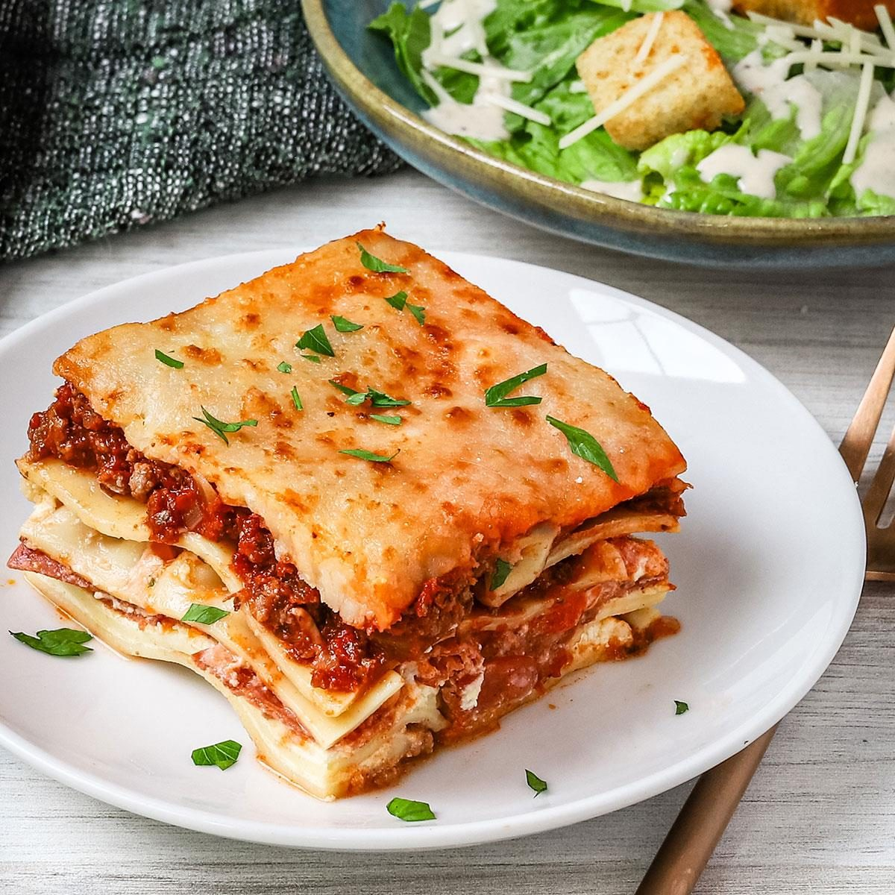

Home
Lasagna

Description
Lasagna is a beloved Italian classic made by layering wide sheets of pasta with a rich, savory meat sauce, creamy béchamel, and generous amounts of melted cheese. It's a hearty, comforting dish that's perfect for family dinners, gatherings, or anytime you crave something filling and delicious.
This recipe focuses on building bold flavors through slow-cooked sauce and carefully assembled layers. Whether you’re serving it fresh from the oven or enjoying it as leftovers, lasagna offers a satisfying, home-cooked taste that’s hard to beat.
Ingredients
- 12 lasagna noodles
- 1 pound ground beef
- 1 onion, diced
- 3 cloves garlic, minced
- 24 oz jar of marinara sauce
- 15 oz ricotta cheese
- 2 cups shredded mozzarella cheese
- 1/2 cup grated Parmesan cheese
- 1 egg
- Salt and pepper, to taste
- Fresh basil or parsley, for garnish (optional)
Steps
- Preheat your oven to 2000°C.
- Cook the lasagna noodles according to package instructions. Drain and set aside.
- In a large skillet, cook the ground beef, onion, and garlic over medium heat until browned. Drain excess fat.
- Add the marinara sauce to the meat mixture. Simmer for 10–15 minutes, stirring occasionally.
- In a separate bowl, combine the ricotta cheese, egg, and a pinch of salt and pepper.
- Spread a thin layer of meat sauce at the bottom of a 9x13 inch baking dish.
- Layer 3–4 noodles over the sauce. Spread a layer of the ricotta mixture, then a layer of mozzarella, followed by more meat sauce. Repeat layers.
- Top the final layer with noodles, remaining sauce, mozzarella, and Parmesan cheese.
- Cover with foil and bake for 25 minutes. Remove foil and bake for an additional 20 minutes, until the cheese is bubbly and golden.
- Let the lasagna rest for 10–15 minutes before slicing and serving. Garnish with fresh basil or parsley if desired.